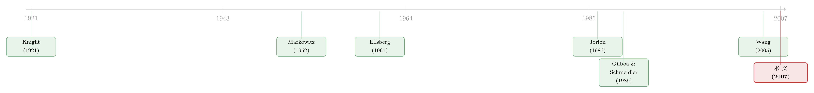

当你不再相信自己估出来的那个均值
本文读的是 Garlappi, Uppal & Wang (2007, Review of Financial Studies)：他们给经典的均值-方差组合优化加了两样东西——一个把「真实期望收益」框进置信区间的约束，再加一层对这些可能取值的「最小化」（min）。结果是，一个对模糊（ambiguity）厌恶的投资者，最优组合恰好等价于把估计出来的均值往「收缩」一点之后再做 Markowitz；闭式解告诉你，这等于在均值-方差组合与最小方差组合之间做一个加权平均，权重由估计精度决定。实证上，这种组合权重更稳、换手更低，样本外 Sharpe 比率往往高于经典与贝叶斯组合。
1 引言：一个谁都知道、却谁都治不好的病
任何学过投资学的人都背得出 Markowitz (1952) 的那句话：给我期望收益 \(\mu\)、协方差矩阵 \(\Sigma\) 和风险厌恶 \(\gamma\)，我就能给你算出「最优」的组合权重。这套理论优雅、自洽，是现代投资组合理论的奠基石。
然而，真正去用过它的人，几乎没有不被它「咬」过的。你把样本均值、样本协方差代进去，吐出来的权重却往往离谱得吓人：某个资产做多 300%，另一个做空 250%；下个月数据微微一动，权重又天翻地覆地翻个面。拿去做样本外，业绩惨不忍睹。Michaud (1989) 干脆把这件事叫做「Markowitz 优化之谜：被优化的，真的最优吗？」
问题出在哪？出在那个 \(\mu\) 上。
我们假装自己知道真实的期望收益，可现实是——它是估出来的，而且估得极差。Merton (1980) 早就指出，期望收益比方差、协方差难估得多：方差你可以靠提高采样频率来逼近，可期望收益的精度只取决于样本跨度有多长，几十年的数据也未必够。Chopra & Ziemba (1993) 把这件事量化得更刺眼：在期望收益上估错，造成的现金等价损失是估错方差的 10 倍以上，是估错协方差的 20 倍以上。
换句话说，整套均值-方差机器最脆弱的那颗螺丝，恰恰是我们最拧不准的那一颗。
2 一个自然的修法，和它没说出口的假设
接着，一个自然的问题是：既然 \(\mu\) 估不准，那就别把它当成铁板钉钉的真值，把「估计误差」也写进模型里，不就行了？
文献里的标准答案是贝叶斯方法（Bayesian approach）：把未知参数当成随机变量，先给一个先验（prior），再用数据更新成后验，最后对收益的预测分布（predictive distribution）求期望效用。Klein & Bawa (1976)、Jorion (1986) 的 Bayes-Stein 估计、Pástor (2000) 都走的是这条路。它确实让权重温和了不少。
但这里藏着一个常被忽略的前提：贝叶斯决策者只有一个先验。用 Knight (1921) 的语言说，他对「不确定性」是中性的——他承认参数会波动，但他笃定地相信自己写下的那个先验分布就是对的。
这恰恰是问题所在。Ellsberg (1961) 那个著名的悖论早就告诉我们：人们面对「连概率都说不清」的情形（即 Knight 意义下的不确定性，后人称之为模糊或 ambiguity），其行为和面对「概率明确的风险」时截然不同——他们厌恶模糊。一个连自己估的均值都心里没底的基金经理，凭什么要假装自己对先验深信不疑？
这里要分清两个词。风险（risk）是「概率已知的赌局」；模糊（ambiguity）是「连概率都说不清的赌局」。Heath & Tversky (1991) 发现，当人觉得自己「在这件事上不在行」时，对模糊的厌恶尤其强烈。本文要刻画的，正是后者——投资者不仅怕亏，更怕「自己算的那个数本身就是错的」。
于是真正关键的一步出现了：本文要做的，不是给 \(\mu\) 一个更好的点估计，而是承认自己根本不知道哪个 \(\mu\) 才对，并且像一个谨慎的人那样，按「最坏情况」来行事。
3 识别策略其实是一个 max-min
这篇文章没有数据上的因果识别，它的「识别」是理论上的——把模糊厌恶用一个干净的优化结构刻画出来。作者在标准均值-方差模型上做了两处、且只做了两处改动：
第一，加一个约束。 不再假设投资者知道真实的 \(\mu\)，而是要求真实的期望收益落在估计值周围的一个「置信区间」里。这一步承认了估计误差的存在——点估计不是唯一可能的值。
第二，加一层最小化。 在这个置信区间内，让 \(\mu\) 向不利于投资者的方向取值（min），再对权重 \(w\) 求最优（max）。这层 min 正是「模糊厌恶」的数学化身：我对自己估的均值没把握，那我就假设老天爷会挑一个最坑我的 \(\mu\)，并在此前提下做到最好。
这就是 Gilboa & Schmeidler (1989) 的多先验（multiple priors）最大-最小期望效用框架在组合选择里的落地。完整的模型写出来是这样的：
$$\max_w \; \min_\mu \; w^\top \mu - \frac{\gamma}{2}\, w^\top \Sigma\, w$$
约束为
$$f(\mu,\hat\mu,\Sigma) \le \varepsilon, \qquad w^\top \mathbf{1}_N = 1.$$
其中 \(\hat\mu\) 是估计出来的均值，\(f(\cdot)\) 刻画置信区间的形状，\(\varepsilon\) 是一个反映「模糊有多大 × 投资者有多厌恶模糊」的常数。作者诚实地指出，模糊（asset-specific）和模糊厌恶（preference-wide）在模型里无法分开识别，所以干脆把模糊厌恶归一化为 1，让投资者只选择资产层面的模糊水平 \(\varepsilon\)。
这套设定有几个好处值得说清楚。它有 Gilboa-Schmeidler 那样坚实的公理化基础，不是拍脑袋；它不引入人为的卖空限制——权重该是多少由模糊厌恶内生决定，而不是手工硬塞一条 \(w \ge 0\)；而且它对均值的估计方式不挑食，经典极大似然也好、贝叶斯也好，甚至你假设了一个 CAPM/APT 因子模型却又怀疑它不是真模型（模型不确定性），都能套进这个框架。
4 模型推导：那层 min，最后变成了一个「收缩」
光看 max-min 这个鞍点问题，会觉得它复杂得没法用。本文最漂亮的地方，就是把这个 min 一步步「消化」掉，化成一个普通的最大化问题。我们分两种情形看。
4.1 逐个资产的置信区间
先看最简单的情形：对每个资产 \(j\) 单独设置信区间。约束取
$$\frac{(\hat\mu_j - \mu_j)^2}{\sigma_j^2/T_j} \le \varepsilon_j, \qquad j = 1,\dots,N,$$
其中 \(T_j\) 是资产 \(j\) 的样本观测数。这个式子有最直接的解释：若收益服从正态分布，\(\dfrac{\hat\mu_j - \mu_j}{\sigma_j/\sqrt{T_j}}\) 服从正态分布，所以 \(\varepsilon_j\) 直接对应一个置信水平。估得越不准（\(\sigma_j/\sqrt{T_j}\) 越大），这个区间就越宽。
对内层 min 求解后，作者得到了命题 1：上面的 max-min 等价于
$$\max_w \; w^\top(\hat\mu - \mu^{\mathrm{adj}}) - \frac{\gamma}{2}\, w^\top \Sigma\, w,$$
而其中的调整项是
$$\mu^{\mathrm{adj}} \equiv \left( \operatorname{sign}(w_1)\,\frac{\sqrt{\varepsilon_1}\,\sigma_1}{\sqrt{T_1}},\; \dots,\; \operatorname{sign}(w_N)\,\frac{\sqrt{\varepsilon_N}\,\sigma_N}{\sqrt{T_N}} \right).$$
这个结果直觉极强。那层吓人的 min 消失了，剩下的就是一个把均值调整一下、再做普通 Markowitz 的问题。而调整的方向由 \(\operatorname{sign}(w_j)\) 决定：
- 如果你想做多某资产（\(w_j > 0\)），就把它的期望收益往下调——「你说它能赚，我打个折」；
- 如果你想做空（\(w_j < 0\)），就把它的期望收益往上调——「你说它会跌，我也打个折」。
不管多空，调整都让你收手。而且，谁估得越不准（\(\sigma_j/\sqrt{T_j}\) 越大），谁被打的折就越狠，权重被压缩得越多。这正是「估计误差大的资产，少配」这条朴素直觉的严格版本——它从一个公理化的偏好里长了出来，而不是被硬塞进去的。
注意这和经典收缩估计（如 Jorion 的 Bayes-Stein）殊途同归，却来路不同：贝叶斯收缩来自「先验把后验拉向均值」，而这里的收缩来自「我对最坏情况的防备」。终点相似，故事完全不同。
4.2 联合约束，与那个核心方程
接着，一个更自然的问题是：与其对每个资产单独设区间，为什么不把所有资产一起框进一个置信椭球？Stambaugh (1997) 给了这么做的动机。若收益联合正态，那么
$$\frac{T(T-N)}{(T-1)N}\,(\hat\mu - \mu)^\top \Sigma^{-1}(\hat\mu - \mu)$$
服从自由度为 \(N\) 的 \(\chi^2\) 分布（\(\Sigma\) 未知时则是 \(F\) 分布，实证中作者用 \(F\)）。于是联合约束写成
$$\frac{T(T-N)}{(T-1)N}\,(\hat\mu - \mu)^\top \Sigma^{-1}(\hat\mu - \mu) \le \varepsilon.$$
对这个椭球约束求解内层 min，得到全文最值得玩味的 命题 2：max-min 等价于下面这个干净的最大化问题。我们把它逐项拆开看：
（约束为 \(w^\top \mathbf{1}_N = 1\)，其中 \(\varepsilon \equiv \epsilon\,\dfrac{(T-1)N}{T(T-N)}\)。）
这个分解一眼就讲清了模糊厌恶的本质。看第三项：传统的风险惩罚 \(a2\) 是组合方差（\(\propto \sigma^2\)）的函数，而模糊惩罚 \(a3\) 是组合标准差（\(\propto \sigma\)）的函数。两者的「曲率」不同——模糊厌恶不是简单地把投资者的风险厌恶 \(\gamma\) 调大一点，它在目标函数里添了一项全新的、对波动一阶敏感的惩罚。这就是为什么模糊厌恶的组合行为，无法被任何一个「更胆小的均值-方差投资者」复制出来。
更妙的是闭式权重。命题 2 给出的最优解 \(w^*\) 可以写成
$$w^* = \frac{1}{\gamma}\,\Sigma^{-1}\!\left[\Big(1 + \tfrac{\sqrt{\varepsilon}}{\gamma\,\sigma_P^*}\Big)\hat\mu - \cdots\right] \cdots,$$
虽然 \(\sigma_P^*\)（最优组合的方差）要靠解一个多项式方程得到，但结论的形态非常清楚：最优组合是经典均值-方差组合与最小方差组合（minimum-variance portfolio）的一个加权平均，权重取决于均值估得有多准、以及投资者有多厌恶模糊。
这一点的含义很深。当 \(\varepsilon \to 0\)（你对均值绝对自信），\(a3\) 消失，组合退回纯粹的 Markowitz。当 \(\varepsilon\) 变大（你越来越没把握），组合就越来越向最小方差组合靠拢——而最小方差组合压根不用期望收益的估计，因此天然不受「均值估不准」之害。模糊厌恶的投资者，本质上是在用「向最小方差组合退守」来保护自己。这也解释了为什么本文的组合总是偏「保守」、偏向那个「安全」资产——而这个安全资产不一定是无风险债券，在没有无风险资产时它就是最小方差组合，更一般地，它可以是任何用来衡量业绩的基准组合。
5 数据与实证：稳，比「最优」更值钱
理论再漂亮，得拿到样本外去验。作者设想一个基金经理，把财富配置到八个国际股票市场指数上。两个应用：第一个只对期望收益有模糊；第二个同时有参数不确定性和模型不确定性（即假设了一个因子模型，却又怀疑它不是真模型）。比较对象是三类组合：忽略估计误差的均值-方差组合、允许估计误差但对模糊中性的贝叶斯组合、以及本文的模糊厌恶组合。
结论是两句话：
- 权重更稳。 模糊厌恶组合的权重远没有均值-方差那么极端、那么失衡，而且随时间的波动小得多——不再是每个月翻天覆地地换仓。这直接对应更低的换手成本。
- 样本外更好。 只要允许参数里一点点模糊，得到的样本外 Sharpe 比率通常就高于均值-方差和贝叶斯组合。注意是「一点点」——模糊厌恶不是越多越好，它是一剂小剂量的稳定剂。
作者也很克制地划了边界：这个模型只适合那些确实具有稳定、显著模糊厌恶的投资者。如果你并不怎么厌恶模糊，那用传统的、模糊中性的贝叶斯方法处理估计误差就够了。模糊厌恶只是「保守行为」的一种来源；养老金的受托责任、相对基准的考核、巨大的下行风险，都可能让一个投资者应该保守——而本文给这种保守提供了一个有公理基础的实现方式。
6 文献脉络
把这条线索拉直来看，它其实是两条河流的交汇。
一条河是组合选择如何对抗估计误差：从 Markowitz (1952) 的原始框架，到 Klein & Bawa (1976)、Jorion (1986) 用贝叶斯-Stein 收缩来驯服极端权重，再到 Jagannathan & Ma (2003) 证明「加一条卖空约束等价于收缩协方差矩阵」、Michaud (1998) 的重采样。这条河的共识是：要往里加结构、加收缩，但始终停在「单一先验、对不确定性中性」这一岸。（关于 Markowitz 优化的现代命运，可参见《把优化器塞进神经网络：当机器学习撞上 Markowitz》与《压缩横截面：因子动物园的尽头，不是更少的因子，而是更聪明的收缩》。）
另一条河是决策论如何处理 Knight 式不确定性：从 Knight (1921) 区分风险与不确定性，到 Ellsberg (1961) 用悖论证明人们厌恶模糊，再到 Gilboa & Schmeidler (1989) 把它公理化成多先验最大-最小期望效用，以及 Dow & Werlang (1992)、Epstein & Wang (1994)、Chen & Epstein (2002) 把它推广到动态与连续时间。Hansen-Sargent 一派则把同一概念叫做「想要稳健（robustness）」。

本文站在两河交汇处：它把 Gilboa-Schmeidler 的多先验框架，第一次以闭式解的形式接进 Markowitz 的组合选择问题。和它最近的邻居是 Wang (2005)——同样处理资产配置中的模型不确定性，但 Wang 用一组「精度不同的先验」、只能数值求解；本文用「置信区间」这一刻画，换来了闭式解和可解释的经济含义。Goldfarb & Iyengar (2003)、Tütüncü & Koenig (2004) 也做稳健组合，但偏算法、偏数值；本文的卖点正是那份解析的透明。（关于「稳健投资者随行情换尺子」的动态版本，可参见《悲观与乐观的浪潮：当「稳健」的投资者学会了随行情换尺子》；关于模糊如何把真实投资者「钉在原地」，可参见《算不清的那一天》。）
7 评论与延伸（Q&A + 研究方向）
(a) 几个可能的疑问
Q：模糊厌恶组合和贝叶斯组合，最后权重都「收缩」了，那它们到底有什么本质区别？
区别在目标函数的形状，而不只是终点的权重。贝叶斯只是把 \(\hat\mu\) 换成一个后验均值，再做同样的均值-方差最大化——惩罚项仍然只有方差（\(\propto \sigma^2\)）。本文在目标里多了一项 \(\sqrt{\varepsilon}\sqrt{w^\top\Sigma w}\)，正比于组合标准差（\(\propto \sigma\)）。这是一项贝叶斯框架里根本不存在的、对波动一阶敏感的新惩罚。所以模糊厌恶不是「先验更悲观的贝叶斯」，它是另一类偏好。
Q：把模糊厌恶归一化为 1、让投资者只选 \(\varepsilon\)，这是不是在回避问题？
是一种诚实的妥协。作者明说了：模糊（asset-specific）和模糊厌恶（preference-wide）在数据里观测上不可分，强行分开就要像 Klibanoff-Marinacci-Mukerji (2005) 那样，要求决策者对「先验本身」再给一个主观概率分布。本文选择了更简约的刻画，代价是 \(\varepsilon\) 成了一个把两者裹在一起的「便利参数」，需要外生设定或校准。
Q：既然没有真实的卖空约束，为什么权重不会跑极端？
因为那层 min 内生地产生了「收缩」。命题 1 里的 \(\operatorname{sign}(w_j)\) 保证：你越想重仓某个资产，模型就越往不利方向调它的均值，把你拉回来。约束不是手工加的 \(w\ge 0\)，而是模糊厌恶自己长出来的「软刹车」。这正是作者强调的优势——不会因为人为禁止卖空，而误杀了在真参数下本该有的空头。
Q：样本外 Sharpe 更高，会不会只是因为「保守」在那段样本里恰好对？
这是最该警惕的地方。模糊厌恶组合向最小方差组合退守，而最小方差组合在很多历史区间本就表现稳健（这是一个被反复记录的「低风险异象」式现象）。所以「赢在样本外」有多少来自模糊厌恶的理论优越性、有多少来自「最小方差恰好好用」，二者在这个实验里难以完全分离。作者强调「只要一点点模糊就够」，某种程度上也暗示了边际收益递减。
Q：模型不确定性和参数不确定性，在这个框架里真是一回事吗？
在数学结构上是统一的——无论你是纯用样本估 \(\mu\)，还是先假设一个 CAPM/APT 再怀疑它，最后都归结为「真实 \(\mu\) 落在某个集合里」这件事，套同一个 max-min。但经济来源不同：参数不确定来自样本短；模型不确定来自「我连用哪个模型都没把握」。框架的优雅，恰恰在于它把两者收进了同一个 \(\varepsilon\)。
Q：这套方法对「期望收益估不准」开了药方，那协方差估不准怎么办？
本文有意把火力集中在期望收益上，理由是 Merton (1980) 和 Chopra-Ziemba (1993)：均值的误差比协方差的误差代价大一个数量级。对协方差的模糊，本文没处理——这既是它的边界，也是后续工作的入口。
(b) 几个可能的研究问题与提案
1. 把多先验框架搬到公司债组合。
【经济故事】公司债的期望收益（信用利差里的「风险补偿」那一块）比股票更难估：违约稀少、样本短、还混着流动性溢价。一个模糊厌恶的债券投资者，理应比股票投资者更该「退守」。把命题 2 的 \(\sqrt{\varepsilon}\sqrt{w^\top\Sigma w}\) 惩罚套到信用组合上，能不能解释机构为何系统性地偏好高评级、低换手的「保守」债券篮子？ 【可行性】中。数据用 TRACE + 评级 + 利差分解即可获得；难点在于把利差中「模糊」的那部分与流动性、违约风险分离，识别 \(\varepsilon\) 需要一个可信的外生变动（如评级机构方法变更）。
2. 外资持有人是不是「更模糊厌恶」的投资者？
【经济故事】Heath & Tversky (1991) 说人对「自己不在行的领域」模糊厌恶更强。外国投资者对本地市场天然更「不在行」，那么他们的持仓是否系统性地更靠近最小方差组合、对本地资产的期望收益打更大的折？这能给「本土偏好（home bias）」一个模糊厌恶的微观解释。 【可行性】中到高。用各国证券持有数据（如 TIC、CPIS）按投资者国别拆分持仓，对照本文预测的「向最小方差退守」做横截面检验。识别上可借助一国对另一国市场的「信息距离」变动。
3. \(\varepsilon\) 是常数吗——模糊厌恶会随波动率「呼吸」吗？
【经济故事】本文把 \(\varepsilon\) 当成固定参数。但危机里，人对「自己估的均值」会更没底，模糊应当上升。如果让 \(\varepsilon\) 随市场波动率状态变动，组合就会在高波动期主动向最小方差退守——这是一个可检验的、关于「危机期换手与去风险」的预测。 【可行性】高。把 \(\varepsilon\) 设成 VIX 或已实现波动的函数，重做本文的滚动样本外实验，看动态 \(\varepsilon\) 能否进一步抬高样本外 Sharpe。纯实证，数据现成。
4. 用市场价格反推投资者隐含的 \(\varepsilon\)。
【经济故事】与其外生设定模糊厌恶，不如问：要让本文的最优组合复现出我们观察到的真实总持仓，市场隐含的 \(\varepsilon\) 该是多少？这把 \(\varepsilon\) 从「校准参数」变成「可被价格识别的量」，并可跨时间追踪「市场的模糊厌恶」。 【可行性】中。需要一个总需求/持仓的横截面（类似需求体系估计的思路），把命题 2 的一阶条件当成估计方程反解 \(\varepsilon\)。识别依赖持仓数据的质量与协方差矩阵的稳健估计。
参考文献
- Chen, Z., and L. Epstein (2002). Ambiguity, Risk, and Asset Returns in Continuous Time. Econometrica 70(4), 1403–1443.
- Chopra, V. K., and W. T. Ziemba (1993). The Effect of Errors in Means, Variances, and Covariances on Optimal Portfolio Choice. Journal of Portfolio Management 19(2), 6–11.
- Dow, J., and S. R. C. Werlang (1992). Uncertainty Aversion, Risk Aversion, and the Optimal Choice of Portfolio. Econometrica 60(1), 197–204.
- Ellsberg, D. (1961). Risk, Ambiguity and the Savage Axioms. Quarterly Journal of Economics 75(4), 643–669.
- Epstein, L. G., and T. Wang (1994). Intertemporal Asset Pricing Under Knightian Uncertainty. Econometrica 62(2), 283–322.
- Gilboa, I., and D. Schmeidler (1989). Maxmin Expected Utility Theory with Non-Unique Prior. Journal of Mathematical Economics 18(2), 141–153.
- Goldfarb, D., and G. Iyengar (2003). Robust Portfolio Selection Problems. Mathematics of Operations Research 28(1), 1–38.
- Heath, C., and A. Tversky (1991). Preferences and Beliefs: Ambiguity and Competence in Choice under Uncertainty. Journal of Risk and Uncertainty 4(1), 5–28.
- Jagannathan, R., and T. Ma (2003). Risk Reduction in Large Portfolios: Why Imposing the Wrong Constraints Helps. Journal of Finance 58(4), 1651–1684.
- Jorion, P. (1986). Bayes–Stein Estimation for Portfolio Analysis. Journal of Financial and Quantitative Analysis 21(3), 279–292.
- Klein, R. W., and V. S. Bawa (1976). The Effect of Estimation Risk on Optimal Portfolio Choice. Journal of Financial Economics 3(3), 215–231.
- Klibanoff, P., M. Marinacci, and S. Mukerji (2005). A Smooth Model of Decision Making Under Ambiguity. Econometrica 73(6), 1849–1892.
- Knight, F. (1921). Risk, Uncertainty and Profit. Houghton Mifflin, Boston.
- Markowitz, H. M. (1952). Portfolio Selection. Journal of Finance 7(1), 77–91.
- Merton, R. (1980). On Estimating the Expected Return on the Market: An Exploratory Investigation. Journal of Financial Economics 8(4), 323–361.
- Michaud, R. O. (1989). The Markowitz Optimization Enigma: Is Optimized Optimal? Financial Analysts Journal 45(1), 31–42.
- Pástor, Ľ. (2000). Portfolio Selection and Asset Pricing Models. Journal of Finance 55(1), 179–223.
- Stambaugh, R. F. (1997). Analyzing Investments whose Histories Differ in Length. Journal of Financial Economics 45(3), 285–331.
- Wang, Z. (2005). A Shrinkage Approach to Model Uncertainty and Asset Allocation. Review of Financial Studies 18(2), 673–705.